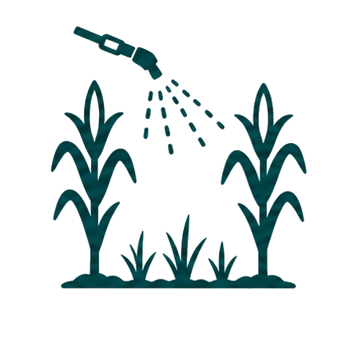
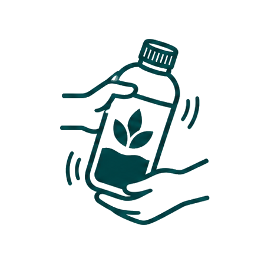
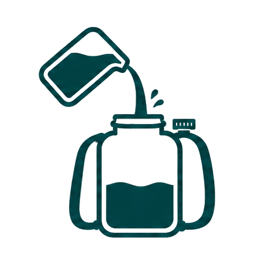
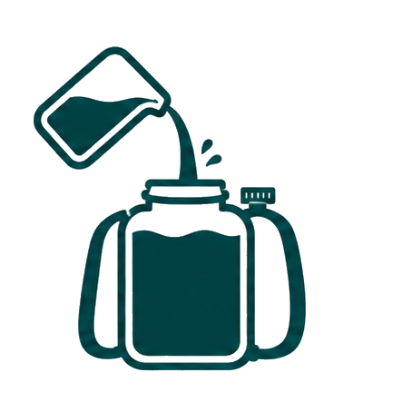

玉米除草剂
适用作物 玉米 防治对象 狗尾草、马唐、牛筋草、稗草
24% 玉净酮·禾封嗪
总有效成分含量：24% 玉净酮10% 禾封嗪14%
剂型：悬浮剂 低毒


使用指南半亩用量
✓适用时期玉米长出3-5片叶、杂草长出2-4片叶时使用施药位置

只喷杂草茎叶，避开玉米心叶配药步骤

1 充分摇匀
2 先加一半清水3 加药并搅匀
4 补水到30斤5 不超过12小时用完30斤水15升 15升喷雾器加满
15升喷雾器加满 5升大矿泉水瓶 × 3
5升大矿泉水瓶 × 3
＋
15升喷雾器加满5升大矿泉水瓶 × 3半两药液约25毫升 普通瓶盖约5盖
普通瓶盖约5盖 一次性纸杯约1/8杯
一次性纸杯约1/8杯 本产品整瓶约1/8瓶
本产品整瓶约1/8瓶
普通瓶盖约5盖一次性纸杯约1/8杯本产品整瓶约1/8瓶剂量调整
草少、刚冒头约四钱瓶盖约4盖
一般情况半两瓶盖约5盖
草密但仍矮小最多六钱瓶盖约6盖
注意事项
用量与次数限制
每30斤水最多六钱药液
（约30毫升）
一季最多使用 1 次
用法禁忌
- 玉米长到五片叶子后停用
- 大风或预计1小时内下雨时不要喷。
- 使用后60天内不得改种或套种小麦、蔬菜。
混合使用禁忌


不能与有机磷类杀虫剂混用。
⚠️ 违反以上要求可能造成作物受损、死亡或人员中毒！ ⚠️
- 配药和施药时穿长袖防护服、长裤和胶靴，佩戴防护手套、口罩和护目镜。
- 施药时不得饮水、进食或吸烟；施药后清洗身体、防护用具和工作服。
- 药液、清洗液和包装不得污染水土，禁止在水体中清洗施药器具。
- 余药密封留在原包装，不得转装入饮料或食品容器。
- 包装妥善收集，不得重复使用或随意丢弃。
- 儿童、孕妇及哺乳期妇女不得接触本品。
中毒急救措施
如感觉不适，立即停止工作并携带本标签就医。皮肤接触用清水和肥皂冲洗；眼睛溅入用流动清水冲洗至少15分钟；吸入时转移到空气流通处；误食时立即漱口，不得自行引吐。无专用解毒剂，对症治疗。
储存和运输方法
加锁存放于阴凉、干燥、通风、防雨处，远离火源和热源。置于儿童及动物接触不到之处，不得与食品、饮料、粮食、种子和饲料混合储运。
登记和生产信息
实验虚构登记号：EXP-PD-A0823 产品标准号：LAB/FIC-A-2026 生产许可证号：EXP-XK-A0823
净含量：200毫升 生产日期及批号：见封口 质量保证期：2年 生产者：原野标签研究实验室（虚构机构）
穿防护服佩戴口罩戴护目镜佩戴手套施药后清洗远离儿童勿污染水体
实验用虚构农药标签 所有产品、成分、登记信息及使用数据均为虚构 禁止用于真实农业生产